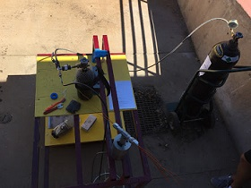
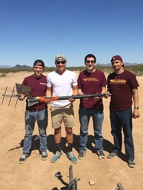
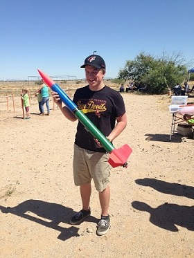
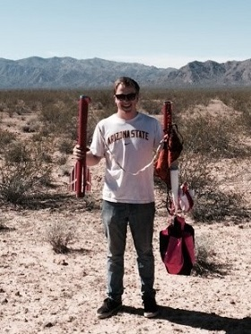
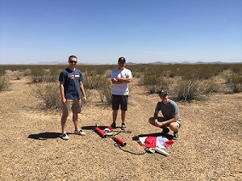
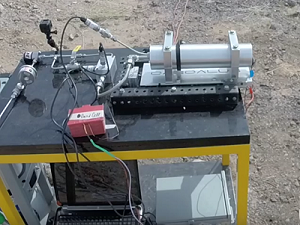
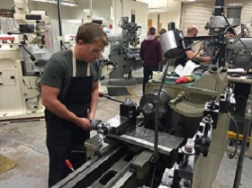
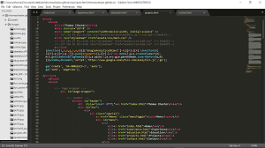

Projects
Pioneer-1 Liquid Rocket Engine
Daedalus Astronautics
Leading a small team through the development of an Ethanol/LOX 250lbf thrust test stand mounted engine. The purpose of this engine is to build a strong knowledge base in the club regarding liquid propulsion and eventually assist in the development of a liquid propulsion flight vehicle. Building is expected to begin in December with hot fire operations slated to begin around April 2018.
The system will use two GN2 pressurized propellant tanks to flow into an impinging injector plate mounted to the thrust chamber on the test stand. Avionics will monitor temperatures, pressures, flow rates, and thrust data and compare it to expected results to determine which designs and predictions were done correctly and which were not. The planned burn time is 4 seconds, and multiple tests are planned. Test operations will take place at ASU's West Campus, led by myself and a faculty advisor. Injector design, thrust chamber design, piping & instrumentation, and structural analysis are being done with various software including: Solidworks, Python, ANSYS, LabView, Excel, and RPA.
This project is in the early design and funding allocation phase, so photos and videos are soon to come. Besides the administrative side of being the team lead I head the propulsion design, fluid system development, and test operation for the project.
Fin Flutter Research Project
Fulton Undergraduate Research Initiative (FURI)
This is an ongoing individual research project funded during the 2016-2017 school year by the Fulton Undergraduate Research Initiative (FURI) at ASU. The project focuses on developing a sounding rocket which used electronics to determine ideal fin geometry for reducing flutter while keeping the fin surface area constant. The sounding rocket uses a removeable fin can concept I designed to fly the rocket multiple times, with each flight replacing a fin can to test a different one. The rocket has a microcontroller placed at the top of the motor mount with wires travelling down to the fins, attaching to flex sensors embedded in the fins. The project began by just focusing on developing the sounding rocket, but myself and other senior members of my club Daedalus Astronautics decided to use the project as an opportunity to rebuild our club’s solid rocket propellant team. The plan became that while I focused on developing the rocket alone, I would also take over as the solids team lead and help the team of eight develop the motors that my sounding rocket would fly on. The team is focused on developing flight capable motors by the Spring of 2018 and flying them in my sounding rocket. We started with quite a small collective knowledge among the team regarding solid propellant, myself included. However, the first year of the project involved successful and safe propellant strand burning and mixing, as well as construction on the sounding rocket beginning. I plan to resume the project when I return to ASU for the Spring 2018 semester from my fall internship.
CURT Maximum Altitude Rocket
Daedalus Astronautics
CURT was a rocketry competition set in Argonia, Kansas in the Spring of 2016. Members of Daedalus Astronautics designed and flew a minimum diameter “Max Alt” rocket with electronics installed in the nosecone through a 3D piece which threaded into the bottom, a “cable cutter method” for the parachute, airfoiled fiberglass fins, and a hand-wrapped carbon fiber body tube. The rocket was designed to be as short and slim as possible, with a majority of the mass and volume being due to the motor. We used a Telemetrum for flight telemetry data and GPS, as some of our calculations predicted an altitude of up to 25,000 feet. The motor failed during the first and only test flight, causing us to be unable to afford to rebuild and officially complete, however I consider this to be the project in which I learned the most and grew the most as an engineer on. When an engineer is forced to look back at every design decision they made and determine whether or not it was correct that they learn some of the most valuable lessons of all.
This project was very much a “roundtable” environment with every member involved in each aspect of the design. However, my main contributions were adding airfoils to the fins, adding a boat tail to the end of the rocket for wake drag reduction, avionics integration and control during flight, and build operations.
Tripoli Certification Launches
Personal
Tripoli Rocketry Association, Inc. is an organization that exists to help amateur rocketry enthusiasts build and lunch in a safe and legal manner. The Tripoli Phoenix Group puts on launches once a month North West of Metropolitan Phoenix. Tripoli gives out certifications to members which qualifies them to launch certain sized motors and eventually experimental motors. Motors are typically classified by their impulse ranges, with each range having a character of the alphabet assigned to it.
When I was a freshman at ASU and had spent a semester in Daedalus Astronautics, I wanted to attempt to get my Tripoli Level 1 flight certification. I decided to use a dual deploy rocket, which is something much more commonly used on advanced high-power rockets. Dual deploy refers to when a rocket has two parachutes, a drogue and main, which are deployed by electronics containing either a barometric sensor or an accelerometer. I used the book “Modern High Power Rocketry 2” as a reference and guide. The first step of the project was to design it in a software called RockSim 9. RockSim is a simulation and design software that helps a person figure out if their rocket is flight capable and achieves the desired results before they invest the time and money required to build a rocket. I designed the rocket based on body tubes and materials that my club already had available in our surplus section. I decided to use an Aerotech I600 motor. The body tube was phenolic and I wrapped it in fiberglass and coated the fiberglass in epoxy to reinforce the phenolic structurally. The fins were made of G10 fiberglass with a fiberglass nosecone. This rocket gave me a lot more experience with building and testing. In May of 2015, I attempted to launch this rocket, and it was unsuccessful. While I was not able to determine the cause fully, I either incorrectly programmed the electronics or the barometric sensor was working incorrectly, causing the ejection charges to go off early and shred the body tube. This was a tough blow for me, experiencing building something for months on end and watching it be destroyed in less than a second, but I am thankful for the experience that it gave me and it helped me be very prepared for my second L1 attempt. I learned quite a bit from the experience and it helped lead to an excellent second rocket.
My second attempt at my level 1 certification went much more smoothly. The rocket was a modified kit that I found online. I laser cut the centering rings from acrylic, and 3D printed my electronics bay. It also used the dual deploy method, and I flew a Cesaroni I motor. The flight went very smoothly, and I was able to receive my Tripoli Level 1 certification.
Drag race team lead
Daedalus Astronautics
Daedalus Astronautics has a program where freshman who have just joined the club are put on a "drag team." The program involves two teams of freshman competing against one another to develop a high powered rocket. The parameters are that the team must use an identical motor, body tube diameter, and nose cone. Each team launches, and the team whose electronics indicate they reached an altitude of 3,000ft first wins. The program is designed to get freshman excited about rocketry and to teach them relevant concepts. I led a group of four freshman (two were unable to attend the launch pictured) and helped them develop the rocket. This was my first experience managing an engineering project. I did barely any of the actual work by hand, as the program is intened for freshman to build their own rocket, so I had to learn how to effectively communicate and teach the students what they needed to know. Each week I taught a lesson on fundamental concepts of rocketry and rocket design. I led builds and taught the team how to use tools and equipment necessary for building. I organized a tour of the ASU machine shop and ASU 3D printing lab. I taught the members how to use SolidWorks, and they designed centering rings to 3D print as well as an electronics bay to laser cut. The project was a lot of fun for everyone involved. The team learned a lot and so did I.
Hybrid Rocket Engine Rebuild
Daedalus Astronautics
During my first year in Daedalus Astronautics, I expressed a lot of interest in solid modelling and machining. The president at the time decided that I would be the right person to rebuild the small-scale hybrid rocket test engine that the club had. The one they had at the time had been fired over 50 times and needed to be retired. I was assigned to rebuild the test engine. I spent many hours teaching myself how to use SolidWorks on YouTube, learning how O-rings and their corresponding grooves work, and learning from ASU's machine shop how to use a mill and lathe. It took me about six months to complete the project, but by the end I was extremely comfortable using almost all machining exquipment. I was able to learn G-code, a bit of welding, and using bandsaws. We tested the whole system at the end of the semester and everything I built worked! The video of the first test fire can be seen about 20 seconds into the video I have playing on the home page. Note: If you're reading this far, I assume you can see in the video that it is a pretty ugly burn. That was the only video I was able to safely collect with the camera setup, and we were having issues with our oxidizer flow, so I'm sorry!
thomaschester.space
Personal
I wanted a better way than just a resume or LinkedIn to showcase my projects and experiences, so I decided to create a website. I was told by a friend about HTML5 UP, which offers free HTML5 templates. I saw that as not only a cheap option, but a great reason to learn how to program in HTML and CSS. It was a very educational experience and I am very proud of the site. I now truly appreciate how much work a good website takes!